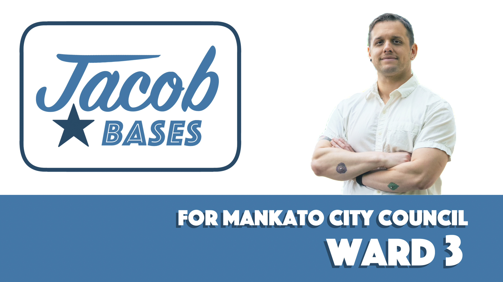

About Jacob
Jacob Bases is a service industry professional, artist and veteran running for Mankato City Council Ward 3 to represent progressive working class values. Born in Milwaukee and raised in New Ulm, his parents working as teachers and library staff, the value of work, education and community were guiding principles in the home.
Jacob bought his home in the Highland Hills neighborhood during his second deployment to Afghanistan with US Army 3/1 as a medic in 2013 where he has proudly resided and participated in the Cedar Bluff Condo Board Administration as a member, secretary and currently Vice President. Since then he has worked; security, kitchen, bar and management roles across multiple locations in Mankato as well as being an active participant in the Mankato arts and social scene organizing and conducting over 150 interviews over 4 years with his team of co-owners at what was Triple Falls Productions.
This proximity to the community is at the heart of what has motivated his run for Ward 3. Jacob is running because he is tired of the voices of the worker, tenant, student and unhoused going unheard or falling by the wayside. Human rights broadly guide his thinking along with the understanding that one city council member cannot alone enact change, regardless he promises to be a relentless advocate on the council as well as with city staff and to highlight the progressive values reflected in this community.
Endorsements
Julia is a progressive, passionate, and present leader who cares deeply about building a community where everyone can live a life of dignity, respect, and freedom.

Volunteer
Join the campaign team to help with outreach, events, and voter engagement.